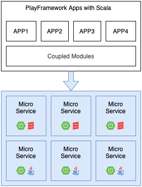

也许你有一万个理由向别人安利你心爱的 Scala，但别人拒绝 Scala 只需要一个理由；
也许 Scala 比 Java 优雅、高效，但它没有 Spring、SpringBoot、SpringCloud 那样强大、易用、丰富的生态系统；
也许你会说 Scala 有 Play Framework，但是 Play 相较于 Spring 大生态真的是望尘莫及；
不管你是否承认，这些都是事实，我也为 Scala 黯然神伤过，心灰意冷过；
但是今天，我要为喜欢 Scala 的同仁带来一点希望，那就是，如果 Scala 无法重新创造一个如 Spring 那样成功的生态，那它能否借助巨人的力量发挥自己独特的优势？
我将通过这篇文章给大家一个肯定的回答。
接下来，我们主要讨论三个问题：
首先完成第一个小目标，搭建一个基于 Scala 源代码的 SpringBoot Web 应用；
实践结果会让你大吃一惊。
（1）首先，使用 Spring initializr 创建一个 SpringBoot Web 应用（本文选择 Gradle 作为构建工具）。
（2）然后，调整 build.gradle 的配置。
引入 Scala 插件和语言类库：
（3）最后，编写应用和接口代码。
源代码组织结构：
应用入口代码：
接口控制器代码：
（1）Intellij Idea 中，可以通过 UI 直接运行；
（2）在命令行，可以通过 Gradle 的 SpringBoot 插件运行；
（3）测试接口：
其实，这是个伪命题。
因为 Spring 本质上是 Java 的开发框架，而 Java 代码最终的运行环境是 JVM，所以只要是能编译成字节码的语言都可以作为 SpringBoot 的开发语言；比如：Kotlin、Groovy 作为 JVM 语种，也是 Spring 官方推荐的开发语言，和 Java 并驾齐驱。
至于 Scala 为什么没有成为 Spring 官方推荐的开发语言之一，大概是因为 Scala 太小众了罢。
Spring 生态系统的优势明显，微服务、云原生技术栈的不二之选，是企业技术选型中最务实的选择。
在这个基础生态、或者说运行容器之上，将开发语言从繁琐的 Java 替换成简洁、表达力更强的 Scala，是否能够产生奇妙的化学反应？这的确是一个非常诱人的选项啊。
FP 是 Scala 最大的优势；它让你用极少的代码做到 Java 要极多代码才能做到的事，让你能回归程序员的真正本职工作：做好命名和抽象。
当然，比 FP 更好的是，Scala 支持 FP / OOP 混合编程范式；它带来的最大价值是，让不熟悉 FP 的人也能快速写出能运行的 Java 式的 Scala 代码，这就迈出了成功的第一步。
那么，Scala 仅仅就是这样了吗？当然不。
Scala3 有一个学术化的项目代码，Dotty，它想要实现的目标不言自明：DOT，the Dependent Object Types；基于新的内核，Scala3 将拥有更强大的编译器、以及更多的特性和语法糖，更多内容将在另一篇做单独的介绍。
能用心爱的 Scala 开发 SpringBoot 应用，甚至是企业级 SpringBoot 应用是一件令人欢欣鼓舞的事，我已经在想象将公司的骨灰级 Scala Play 超级单体应用改造成 SpringBoot / Scala 微服务的美丽画面。
